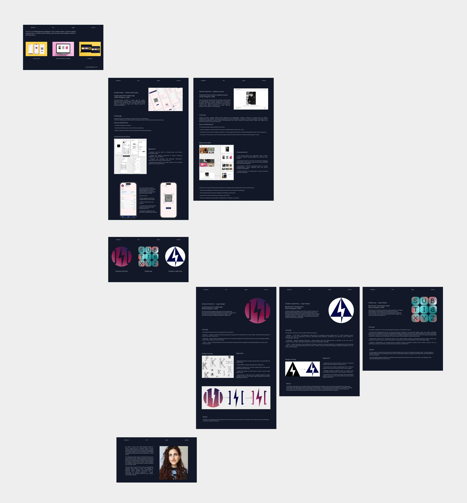

Elisapaci - Portfolio Website Case Study
Multidisciplinary designer’s portfolio site
Web Designer | 2025
This website serves as the central hub for my work: UX / UI design + visual design rooted in photography. Its purpose is to showcase my projects (apps, websites, photography) in a clean, intuitive, and professional way — giving potential clients or collaborators a clear sense of my style, capabilities, and range.

Key considerations:
Before building the site, I identified several key priorities:
- Create a clear and immediate introduction to who I am and what I do.
- Showcase a variety of project types: from where I'm heading (apps, web redesigns) to where i come from (photography) without visual overload.
- Keep navigation intuitive and friction-free.
- Maintain a minimal, clean aesthetic aligned with my personal design style.
- Ensure the site is easy to update and expand as new projects are added.
Structure & Design Decisions

-
Rather than using a complex portfolio structure, I designed the site as a calm, visual space for browsing. Each project is given room to stand on its own, without competing for attention. The layout is intentionally minimal, with restrained typography and consistent spacing to create visual cohesion across varied work.
-
The experience is designed to be understood quickly. From the first screen, visitors know who I am and what I offer. From there, they can scroll through selected projects and easily find a way to get in touch. No complex menus or distractions — just a clear, linear flow that keeps the focus on the work.
Key Outcomes
- Strong and immediate first impression
- Clear presentation of diverse skills
- Easy to navigate and easy to expand
- Establishes a consistent personal brand
Future Improvements
- Add project categories as the site grows
- Include testimonials and process details
The portfolio balances clarity, simplicity, and flexibility. It reflects my approach to design — intentional and visually grounded — and provides a solid foundation for future growth.